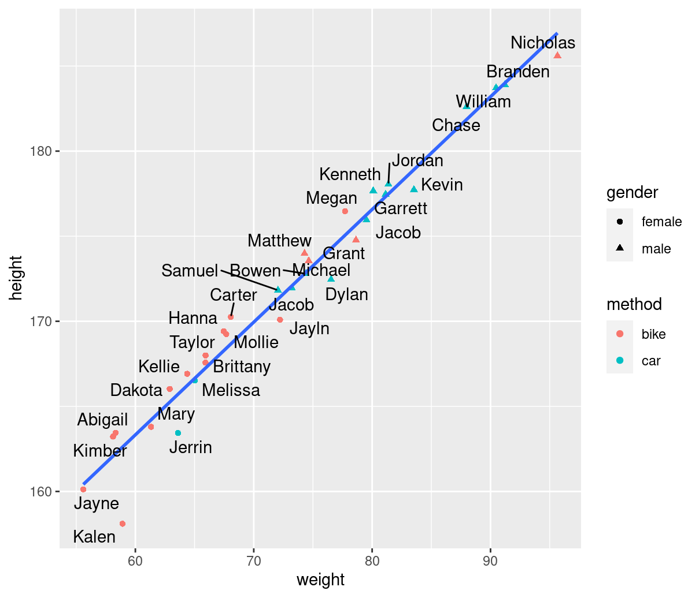
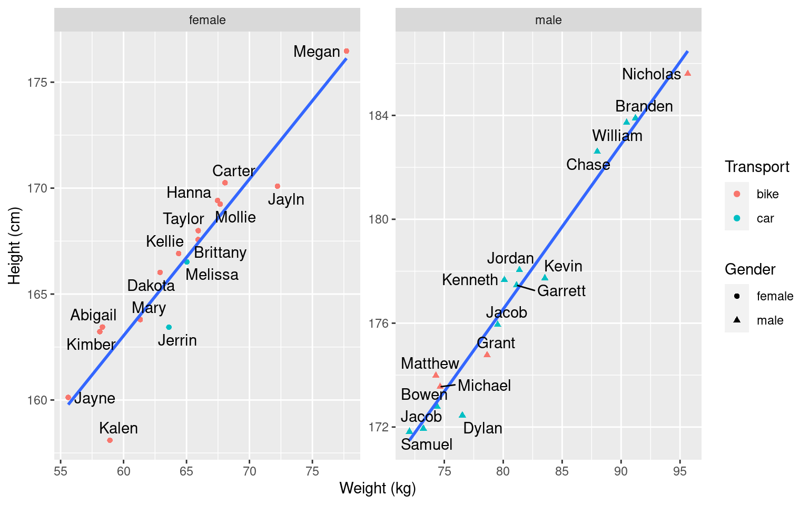
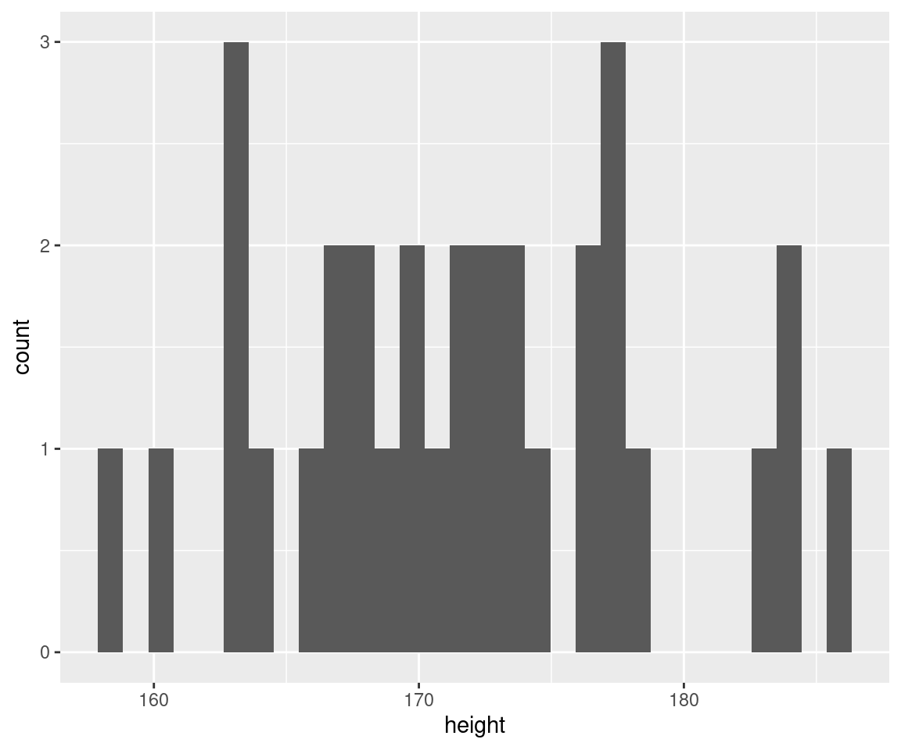
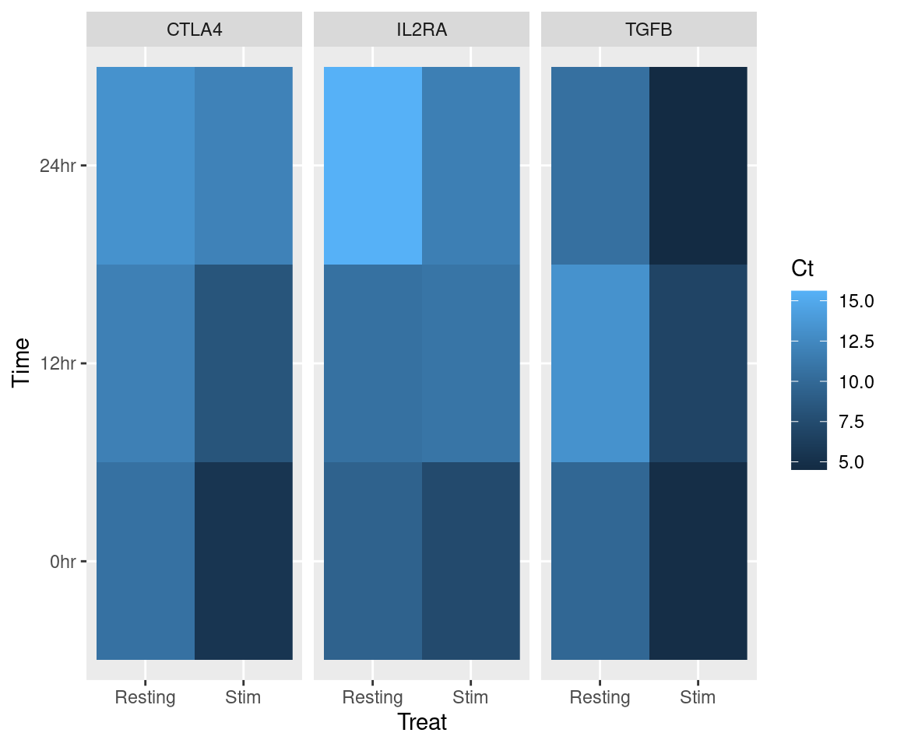

library(tidyverse)
transport <- read_csv("data/transport_clean.csv")Tidying Data
BODL R Training
Dr Stevie Pederson
Black Ochre Data Labs
Telethon Kids Institute
February 16, 2023
Data Visualisation
Session Setup
- Start a new R Script called:
DataVisualisation.R - Add the following two lines and execute them
library(tidyverse)will load all packages from the last sessionggplot2will also be loaded
Base Plotting
R has many generic plotting functions inbuilt:
- Line/Scatter plots:
plot() - Histograms:
hist() - Boxplots:
boxplot()
- They’re usually ugly & unfriendly to use
- Can be handy for a quick & dirty plot
Scatterplots
A simple scatter plot needs x & y co-ordinates
Histograms
For a histogram, we only need values which can be binned
Checkout the p-values!!!

Boxplots
A boxplot will plot the range of values across different categories
- We can use the formula syntax from
R - The
~symbol usually means “depends on”- i.e. Plot the values of height as they depend on gender
Using ggplot2
The package ggplot2
ggplot2gives much more flexibility and power- Is part of the core
tidyverse
- Is part of the core
- Has unique syntax and approach
- We add layers of plotting information like geometry, colours, themes etc
The package ggplot2
ggplot2gives much more flexibility and power- Is part of the core
tidyverse
- Is part of the core
Has unique syntax and approach
We add layers of plotting information like geometry, colours, themes etc
Based on the book: The Grammar of Graphics1

Calling ggplot()
The main function is ggplot() (The package is ggplot2)
Adding A Geometry Layer
After defining the overall aesthetics, we
- Tell R “more is to come” by adding ‘
+’ at the end of the line - Add the geometry using various
geom_*()functions
Global Aesthetics
- There are numerous aesthetics available for
geom_point() - Start with colouring points by the transport method
Global Aesthetics
- Now set the shape of each point by the gender of our study participants
Fixed Aesthetics
- Top-level aesthetics (
ggplot(aes(...))) are passed down through layers - Aesthetics can be set to respond to variables (i.e. columns)
- Can also be provided as fixed values \(\implies\) specific to a layer
Aesthetics and Layers
- Variable aesthetics can also be restricted to a layer
- This will look identical to the previous plot
- Colour & Shape will not be passed to any other layers
- Next, we’ll add more layers
Adding Multiple Layers
geom_smooth()will add a line of best fit, with standard error- This defaults to a
loessfit
Adding Multiple Layers
- We can manually specify
lmand hide the standard errors - The formula syntax says
ydepends onx
Adding Multiple Layers
colour = methodin the globalaes()produces two lines
Being Careful With Aesthetics
colour = methodin the globalaes()produces two lines
geom_line()has no shape aesthetic- If we’d also left
shapeassigned in the initial call- Lines would also be grouped by gender
- Grouped lines would still have the same type of line
- Could add a
linetypeorlinewidthaesthetic- This looks terrible
Adding labels
Point labels can be added using geom_text()

Adding labels
ggrepel::geom_text_repel() is a good alternative

The package ggplot2: labels
Axis and legend labels can be modified using labs()
Using facets
Saving as an Object
- Our code is starting to get a bit long for my screen
- We can save a
ggplot2plot as anRobject
- Note that no plot will be produced
- Typing the object name (
p) will generate the figure
- Typing the object name (
- We can still continue adding layers and modifying
Using facets
- The ability to break a plot into facets is an incredibly useful feature
Using facets
- We can set separate scales using
scales = "free"- Or
"free_x","free_y"
- Or

Using facets
- An alternative is
facet_grid() - We use the
y ~ xsyntax to specify the x/y groupings
Different geoms
Common geoms
geom_boxplot(),geom_violin()geom_bar(),geom_col(),geom_histogram()geom_errobar(),geom_errorbarh()
geom_line(),geom_density()geom_rect(),geom_raster()geom_hline(),geom_vline(),geom_abline(),geom_segment()geom_text(),geom_label()
Boxplots
Boxplots
Adding fill or colour variables will group within the x-variable
Can be easily combined with facets for clear visualisations
Histograms
- Histograms look horrible with the default settings

Histograms
- Manually setting
fill,colourandbinwidthreally helps
Histograms
- The syntax to switch to a frequency instead of count
Bar/Column Charts
- Two variants:
geom_col()andgeom_bar()
- Both can produce the same plot with enough tweaking
- Both stack values by default
- By default
geom_bar()counts values by groupingsgeom_col()plots the data as provided
- If we summarise in advance:
geom_col()- This is my preferred option
- I retain control over the data (trust no-one, not even yourself)
Bar/Column Charts
- Manually summarising for stacked bars
- Note that now we’re piping the data in!

Bar/Column Charts
- This is identical to the default for
geom_bar()
Bar/Column Charts
- Manually summarising for ‘dodged’ bars
- The same can be applied for
geom_bar()
Adding Error Bars
- Instead of counting, let’s summarise values for height by gender
Adding Error Bars
- Now we can add error bars by calculating \(\hat{\sigma}\)
Challenge
- Repeat the previous using weight instead of height
- Include the transport method as facets
Density Plots
Axis Intercepts
transport %>%
ggplot(aes(height, colour = gender)) +
geom_density(
fill = "grey70", alpha = 0.5,
linewidth = 1
) +
geom_vline(
aes(xintercept = mn, colour = gender),
## Take note of this amazing trick
## We need to use the %>% approach to piping here
data = . %>%
group_by(gender) %>%
summarise(mn = mean(height))
)Heatmaps
- Need multiple measures
- Let’s reload that PCR time course
Rows: 18
Columns: 4
$ Gene <chr> "IL2RA", "IL2RA", "IL2RA", "IL2RA", "IL2RA", "IL2RA", "TGFB", "T…
$ Treat <chr> "Resting", "Resting", "Resting", "Stim", "Stim", "Stim", "Restin…
$ Time <chr> "0hr", "12hr", "24hr", "0hr", "12hr", "24hr", "0hr", "12hr", "24…
$ Ct <dbl> 9.390426, 10.583461, 15.607838, 7.328033, 10.936257, 11.743185, …Heatmaps
geom_raster()can be used for plotting even grids

Scales
Modifying Scales
- Up until now we’ve accepted the default colours
- We can modify all colours and axes using scales
scale_x_continuous(),scale_y_continuous()scale_x_discrete(),scale_y_discrete()scale_fill_continuous(),scale_fill_discrete(),scale_fill_manual()scale_colour_continuous(),scale_colour_discrete(),scale_colour_manual()scale_alpha_*()+ many, many more
Expanding Axes
expansion()takes two vectors- The first is multiplicative
- The second is additive
Changing the Colours
- We can manually set colours using
scale_fill_manual()- Can be named if you choose
Changing the Colours
scale_fill_brewer()has a series of defined palettes
Changing the Colours
Changing the Colours
- The
viridispalettes are colour-blind friendly - Also excellent at showing changes in the middle of the range
Manually Defining Palettes
- All 657 available colours can be seen by typing
colours() hcl.colors()also has a series of predefined palettes
[1] "Pastel 1" "Dark 2" "Dark 3" "Set 2"
[5] "Set 3" "Warm" "Cold" "Harmonic"
[9] "Dynamic" "Grays" "Light Grays" "Blues 2"
[13] "Blues 3" "Purples 2" "Purples 3" "Reds 2"
[17] "Reds 3" "Greens 2" "Greens 3" "Oslo"
[21] "Purple-Blue" "Red-Purple" "Red-Blue" "Purple-Orange"
[25] "Purple-Yellow" "Blue-Yellow" "Green-Yellow" "Red-Yellow"
[29] "Heat" "Heat 2" "Terrain" "Terrain 2"
[33] "Viridis" "Plasma" "Inferno" "Rocket"
[37] "Mako" "Dark Mint" "Mint" "BluGrn"
[41] "Teal" "TealGrn" "Emrld" "BluYl"
[45] "ag_GrnYl" "Peach" "PinkYl" "Burg"
[49] "BurgYl" "RedOr" "OrYel" "Purp"
[53] "PurpOr" "Sunset" "Magenta" "SunsetDark"
[57] "ag_Sunset" "BrwnYl" "YlOrRd" "YlOrBr"
[61] "OrRd" "Oranges" "YlGn" "YlGnBu"
[65] "Reds" "RdPu" "PuRd" "Purples"
[69] "PuBuGn" "PuBu" "Greens" "BuGn"
[73] "GnBu" "BuPu" "Blues" "Lajolla"
[77] "Turku" "Hawaii" "Batlow" "Blue-Red"
[81] "Blue-Red 2" "Blue-Red 3" "Red-Green" "Purple-Green"
[85] "Purple-Brown" "Green-Brown" "Blue-Yellow 2" "Blue-Yellow 3"
[89] "Green-Orange" "Cyan-Magenta" "Tropic" "Broc"
[93] "Cork" "Vik" "Berlin" "Lisbon"
[97] "Tofino" "ArmyRose" "Earth" "Fall"
[101] "Geyser" "TealRose" "Temps" "PuOr"
[105] "RdBu" "RdGy" "PiYG" "PRGn"
[109] "BrBG" "RdYlBu" "RdYlGn" "Spectral"
[113] "Zissou 1" "Cividis" "Roma" - Colours can also be specified as RGB, e.g. “#3C3C44”
- Can also use the
rgb()function
- Can also use the
Manually Defining Palettes
- I often spend ages on this
Heatmaps
- Heatmaps usually have continuous values
- We’ll also need to tidy those axes
- Alternatives are
scale_fill_gradient(),scale_fill_gradient2(),scale_fill_gradientn()

Themes
Modifying Themes
- I hate that grey background!!!
Themes
- Themes are used to control the overall output of multiple aspects
- e.g. The background grid, fonts, legend position etc
- The default theme is horrible
- Also try
theme_classic(),theme_minimal(),theme_void()
- Also try
Themes
- We can place the legend at the bottom
- By default it now runs horizontally
- Or we can inset it into the plotting region
Theme Elements
- The above elements just took standard vectors
- Some more complicated elements need helper functions
element_text()allows setting font size, font type, text alignment etcelement_rect()allows setting outline colours & fills etcelement_blank()removes the entire element
Theme Elements
p +
ggtitle("My Transport Data") +
theme_bw() +
theme(
legend.position = c(0.99, 0.01), legend.justification = c(1, 0),
# Centre the title
plot.title = element_text(hjust = 0.5),
# Do dumb things to the x-axis
axis.text.x = element_text(face = "italic", size = 16),
# Hide the grid
panel.grid = element_blank(),
# Change the plot border
panel.background = element_rect(colour = "forestgreen", linewidth = 2)
)Exporting Graphics
Exporting Graphics
- Click the
Exportbutton in RStudio- Plots can be previewed interactively and resized
- Call
ggsave()to export the last plot- The suffix will automatically set the output format
The Old-Fashioned Way
- Alternatively, call a graphics device directly
- By default, the graphics device is the
PlotsPane - If we call a different device via a function, the plot is written to a file
# The call to png() opens a new graphics device that writes to a png file
png(
"transport.png",
width = 7, height = 7, units = "in",
res = 300
)
# Now the device is open, make the plot
p
# Close the graphics device
dev.off()
# Plots will now be produced back in the usual place
# Check to see if the file has been created- The is super-helpful for really getting font-sizes figured out
- Additional devices are
pdf(),jpeg(),tiff(),svg()etc